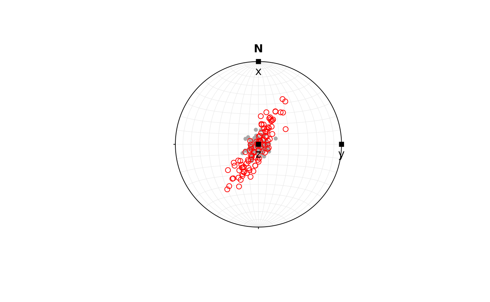

Deformation Gradient Tensor
Usage
is.defgrad(x)
as.defgrad(object)
defgrad(x, time, steps, ...)
defgrad_from_ratio(Rxy = 1, Ryz = 1)
defgrad_from_shearstrain(Rxy = 1, Ryz = 1)
# S3 method for class 'Pair'
defgrad(x, ...)
defgrad_from_vectors(v1, v2)
defgrad_from_axisangle(axis, angle)
defgrad_from_comp(
xx = 1,
xy = 0,
xz = 0,
yx = 0,
yy = 1,
yz = 0,
zx = 0,
zy = 0,
zz = 1
)
defgrad_from_simpleshear(gamma)
defgrad_from_pureshear(k)
defgrad_from_generalshear(k, gamma)
defgrad_from_dilation(dilation = 0)
# Default S3 method
defgrad(x, ...)
# S3 method for class 'velgrad'
defgrad(x, time, steps, ...)Arguments
- x
object of class
"Pair","velgrad"or 3x3"matrix"- object
3x3
"matrix"- time
numeric. Total time (default is 1)
- steps
numeric. Time increments (default is 1)
- ...
parameters passed to function call
- Rxy, Ryz
numeric. the XY and YZ strain ratio to create a strain tensor with axial stretches.Values must be greater than or equal to 1.
- v1, v2
spherical objects. Deformation gradient results from the rotation around axis perpendicular to both vectors to rotate
v1tov2.- axis, angle
rotation axis and angle, axis can be an object of class
"Vec3","Line","Ray", or"Plane", or a three-element vector. Angle in degrees when axis is a object of class"Line","Ray", or"Plane", and radians otherwise. Counterclockwise rotation for positive angles.- xx, xy, xz, yx, yy, yz, zx, zy, zz
numeric. Directly specify components of the tensor. Identity matrix by default.
- gamma
numeric. shear strain in x-direction
- k
numeric. Horizontal pure shear component in the y-direction
- dilation
numeric. Volume increase
Value
object of class "defgrad", i.e. a 3x3 matrix.
If
xis a Pair object, thendefgrad()creates"defgrad"tensor representing rotation defined by"Pair". Rotation brings x-axis to lineation and z-axis to normal to planedefgrad_by_compcreates an defined by individual components (default is identity tensor)defgrad_by_ratio()creates an isochoric"defgrad"tensor with axial stretches defined by strain ratios (default is identity tensor).defgrad_from_vectors()creates"defgrad"tensor representing rotation around the axis perpendicular to both vectors and rotatev1tov2.defgrad_from_axisanglecreates"defgrad"tensor representing a rigid-body rotation about an axis and an angle.defgrad_from_pureshearcreates an isochoric coaxial"defgrad"tensor.defgrad_from_simpleshearcreates an isochoric non-coaxial"defgrad"tensor.defgrad_from_generalshearcreates an isochoric"defgrad"tensor, where transtension is \(k>1\) and \(\gamma \neq 0\), and transpression is \(k<1\) and \(\gamma \neq 0\).defgrad_from_dilationcreates"defgrad"tensor representing the volume change in z-direction.
References
Fossen, H., & Tikoff, B. (1993). The deformation matrix for simultaneous simple shearing, pure shearing and volume change, and its application to transpression-transtension tectonics. Journal of Structural Geology, 15(3–5), 413–422. doi:10.1016/0191-8141(93)90137-Y
Sanderson, D. J., & Marchini, W. R. D. (1984). Transpression. Journal of Structural Geology, 6(5), 449–458. doi:10.1016/0191-8141(84)90058-0
See also
velgrad(), transform_linear() to apply the deformation on an object
Examples
defgrad_from_ratio(2, 3)
#> Deformation gradient tensor
#> [,1] [,2] [,3]
#> [1,] 2.289428 0.000000 0.0000000
#> [2,] 0.000000 1.144714 0.0000000
#> [3,] 0.000000 0.000000 0.3815714
defgrad_from_axisangle(Line(120, 50), 60)
#> Deformation gradient tensor
#> [,1] [,2] [,3]
#> [1,] 0.5516470 -0.75286916 0.3589897
#> [2,] 0.5739587 0.65494097 0.4915523
#> [3,] -0.6051917 -0.06511807 0.7934120
defgrad_from_vectors(Line(120, 50), Line(270, 80))
#> Deformation gradient tensor
#> [,1] [,2] [,3]
#> [1,] 0.8165776 0.03175915 0.2514224
#> [2,] 0.1158354 0.69202890 -0.5070905
#> [3,] -0.2253975 0.51918204 0.6588077
defgrad(Pair(40, 20, 75, 16))
#> Deformation gradient tensor
#> [,1] [,2] [,3]
#> [1,] 0.2487928 -0.9331095 -0.2620026
#> [2,] 0.9285075 0.3060065 -0.2198463
#> [3,] 0.2756374 -0.1885752 0.9396926
defgrad_from_generalshear(k = 2, gamma = tan(30 * pi / 180))
#> Deformation gradient tensor
#> [,1] [,2] [,3]
#> [1,] 1 0.8329404 0.0
#> [2,] 0 2.0000000 0.0
#> [3,] 0 0.0000000 0.5
# combine deformation by matrix multiplication
D1 <- defgrad_from_ratio(5, 1)
D2 <- defgrad_from_axisangle(Line(0, 90), 30)
# Matrix multiplication is not commutative!!!!
D12 <- D2 %*% D1 # here: D1 is applied first
# Apply deformation of orientation data
set.seed(20250411)
l <- rvmf(100, mu = Line(0, 90), k = 100)
l_trans <- transform_linear(l, D12)
axes <- Vec3(c(1, 0, 0), c(0, 1, 0), c(0, 0, 1))
plot(l, col = "darkgrey")
points(l_trans, col = "red")
points(axes, pch = 15)
text(axes, labels = c("x", "y", "z"), pos = 1)
